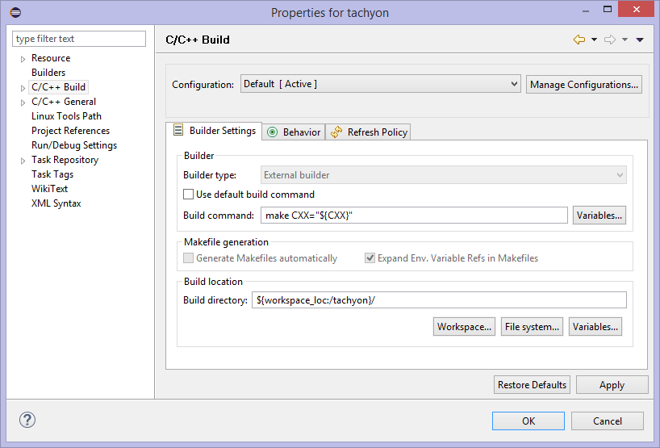
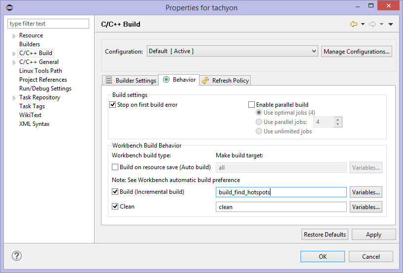

Enabling Performance Collection on an Embedded Linux* System
The Intel® VTune™ Amplifier for Systems release includes sample code called tachyon for you to use on the target system. The tachyon sample code included with your distribution is modified for the Yocto* environment. After extracting the sample code, build the application and copy it to your target.
On the host Linux* system, change directories so you can untar the sample code:
cd /~yoctoExtract the tachyon sample application:
tar xvzf /opt/intel/vtune_amplifier_for_systems/samples/en/C++/tachyon_vtune_amp_xe.tgzUse the Intel C++ Compiler, GNU C++ Compiler, or Eclipse to build the sample application.
Build Application using the Intel C++ Compiler
Source important environmental variables:
source /opt/poky/2.1/environment-setup-corei7-64-poky-linux-iccThis option is only available if you have integrated Intel System Studio with Yocto Project. For more information, see https://software.intel.com/en-us/articles/using-intel-system-studio-with-the-yocto-project.
Compile the tachyon code:
make CXX="$CXX” build_find_hotspotsBuild Application Using GNU C++ Compiler
Source important environmental variables:
source /opt/poky/2.1/environment-setup-corei7-64-poky-linuxCompile the tachyon code:
make CXX="$CXX” build_find_hotspotsBuild Application Using Eclipse
Source important environmental variables:
source /opt/poky/2.1/environment-setup-corei7-64-poky-linuxOpen Eclipse from the command window. This allows Eclipse to inherit the environment variables set in the previous step.
In Eclipse, select File > Import to import the existing Tachyon project.
In the Import window, select C/C++ > Existing Code as Makefile Project and click Next.
Set a project name and click Browse and navigate to the location where you extracted the Tachyon sample code. Click Finish to import the project.
Select the new project you created and select Project > Properties or right-click the project name and select Properties.
In the Properties window, select C/C++ Build to show the build settings.
On the Builder Settings tab, uncheck the Use default build command checkbox and enter the following in the Build command field: make CXX="${CXX}"

On the Behavior tab, enter the following in the Build (incremental build) field: build_find_hotspots

Click Apply to apply the changes and OK to close the Properties window.
Select Project > Build Project to build the Tachyon sample application.
Copy the tachyon binary, the dat library and the libtbb.so folder to an appropriate location on your target system.
For example:
scp tachyon_find_hotspots dat
root@123.456.789.00:home/root/
scp tbbforexamples/linux/4.0.1/lib/intel64/libtbb.so*
root@123.456.789.00:/usr/lib